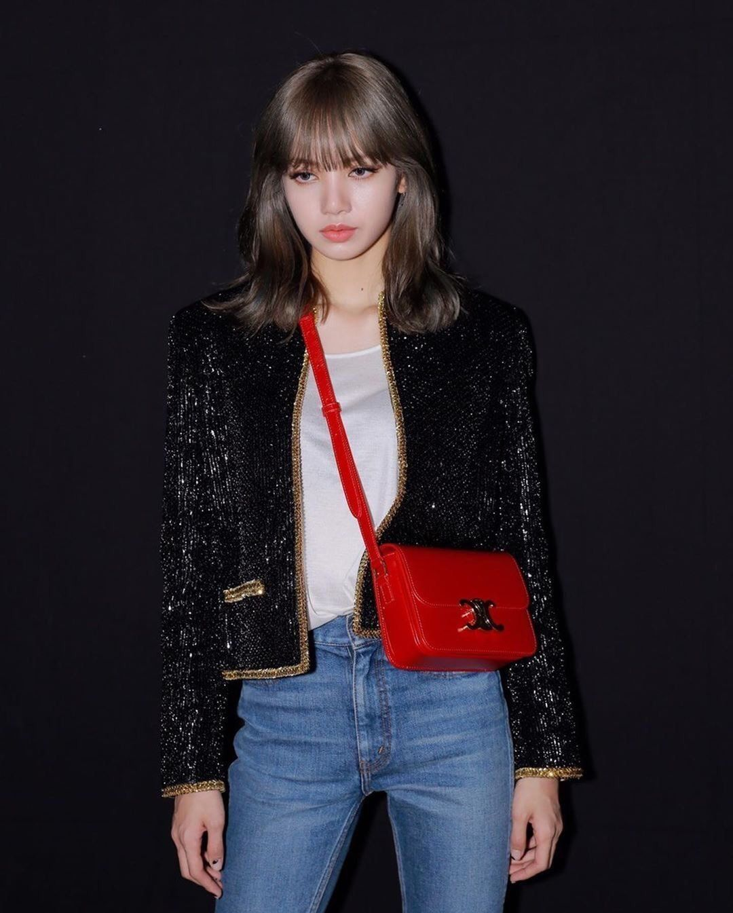
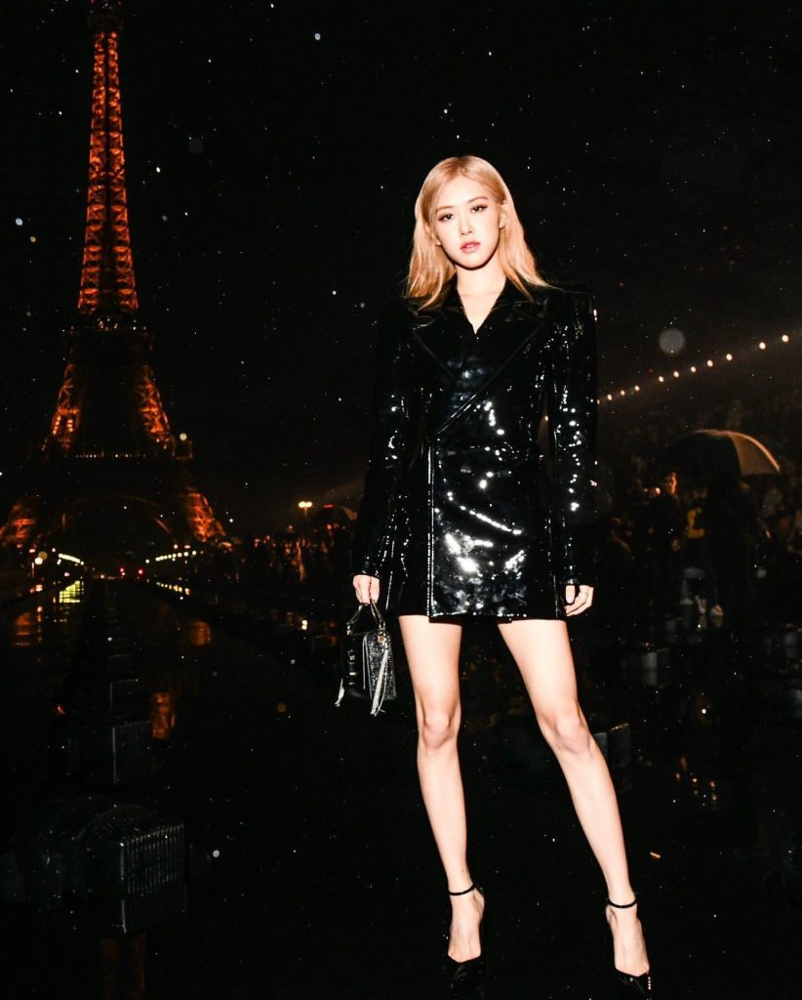
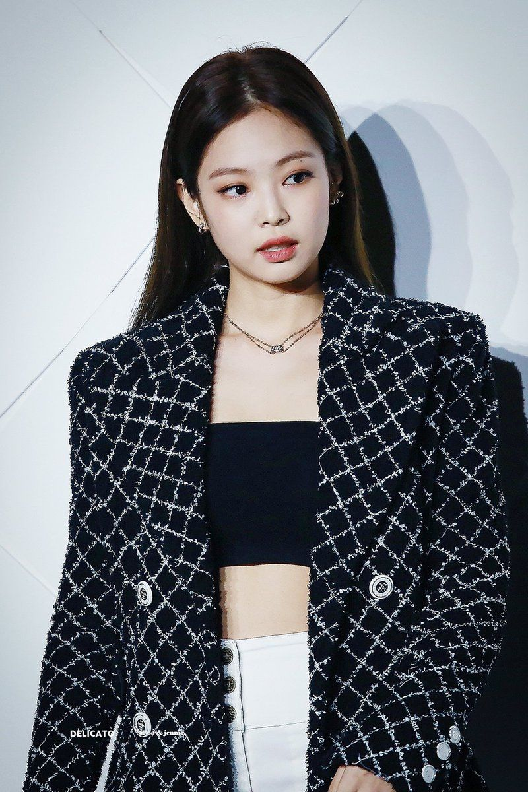
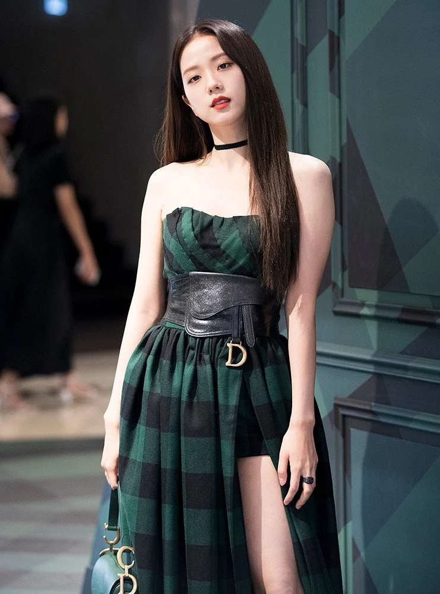

La influencia de Blackpink más allá de la música, especialmente en Corea del Sur, se extiende también a la moda. Cada miembro ha servido como embajadora global de diferentes marcas de lujo, entre las que destacan: Jisoo para Dior y Cartier, Jennie para Chanel, Rosé para Yves Saint Laurent y Tiffany & Co. y Lisa para Bulgari y Celine. Además, se destacó a Blackpink por llamar la atención internacional con el Hanbok tradicional de Corea del Sur que presentaron en su vídeo musical «How You Like That» y en algunas actuaciones en el escenario. La imagen de Blackpink siempre enfatiza en la moda y la individualidad. Jennie afirmó que la moda «definitivamente nos empodera tanto como la música» en una entrevista con la revista Elle, y Rosé describió su música y la moda como «inseparables».Su moda se ha destacado por combinar tanto en la uniformidad del grupo como los gustos y estilos individuales.
| Lisa | Rosé | Jennie | Jisoo |
|  |  |  |  |
| Lisa presentada como embajadora global de Celine | Rosé en la PFW 2021 con YSL | Jennie para una pasarela de Chanel | Jisoo en la PFW 2022 para Dior |